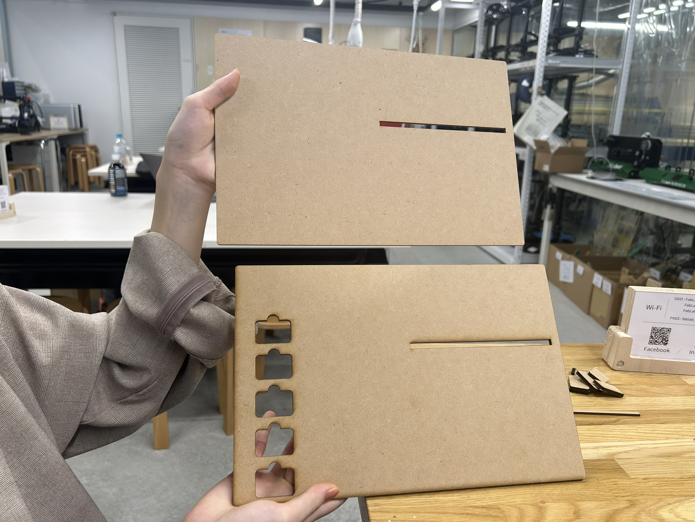
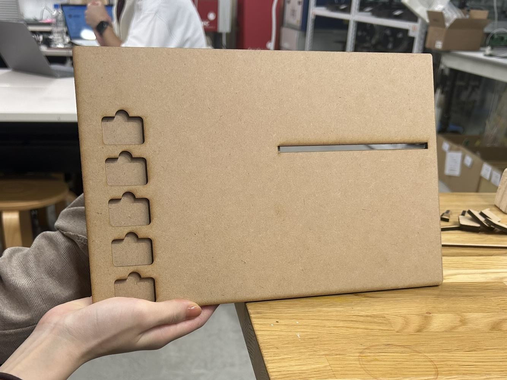
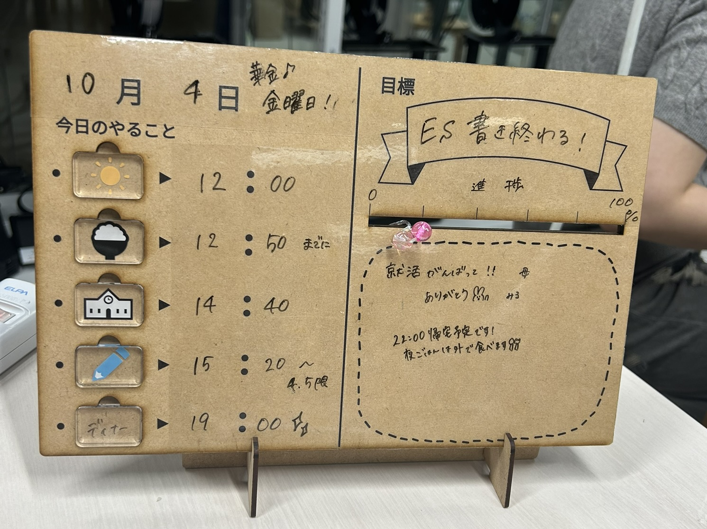
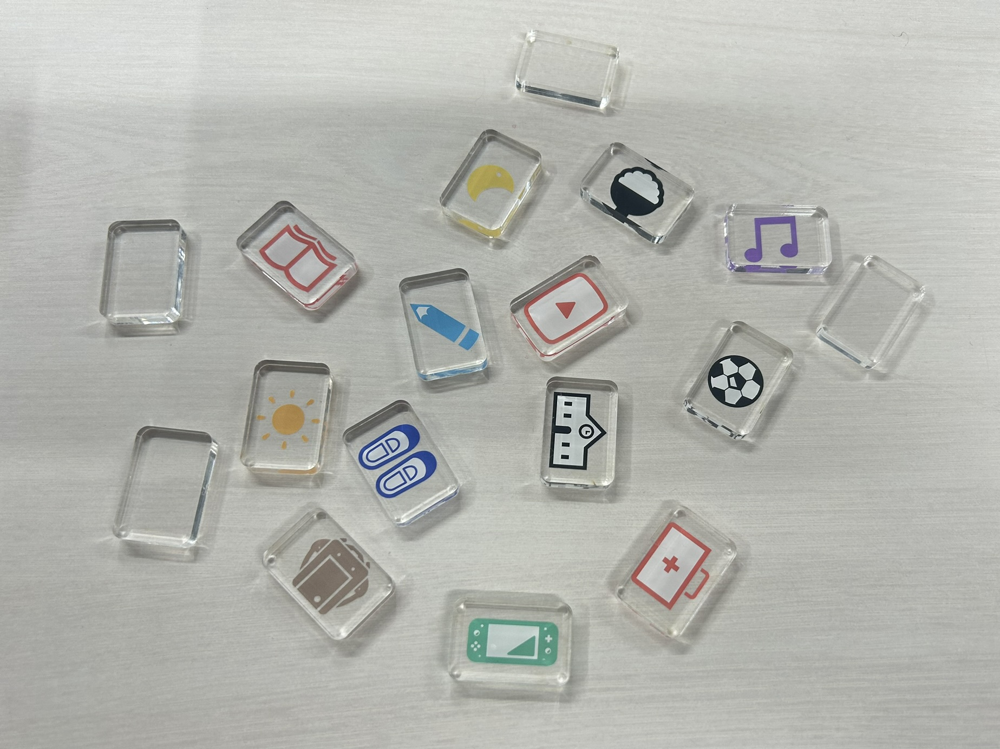
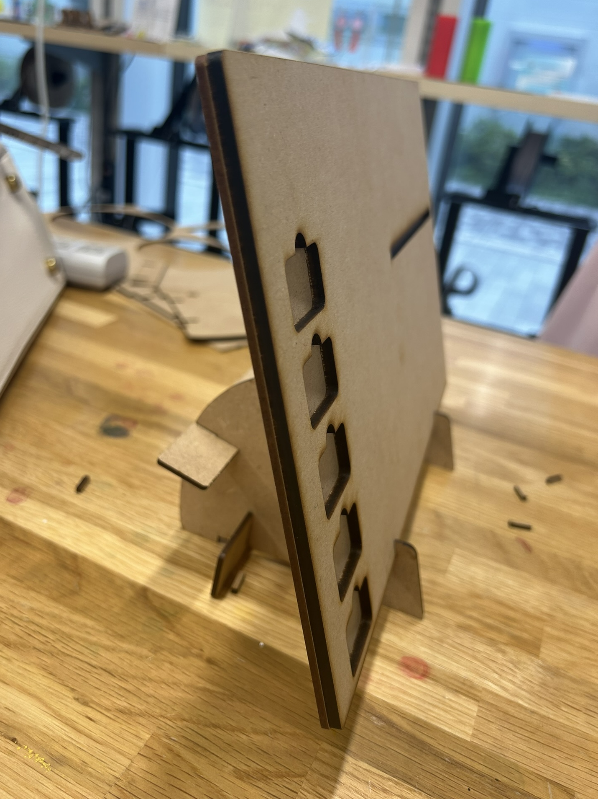
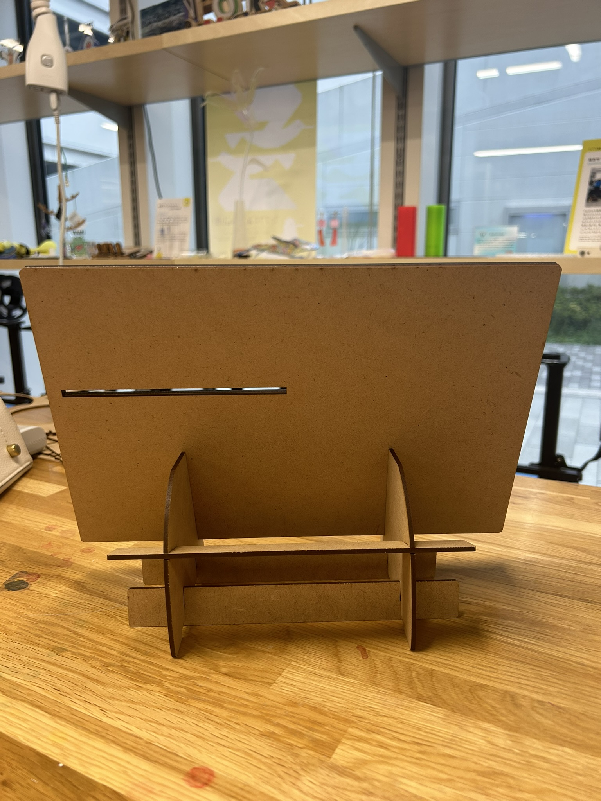
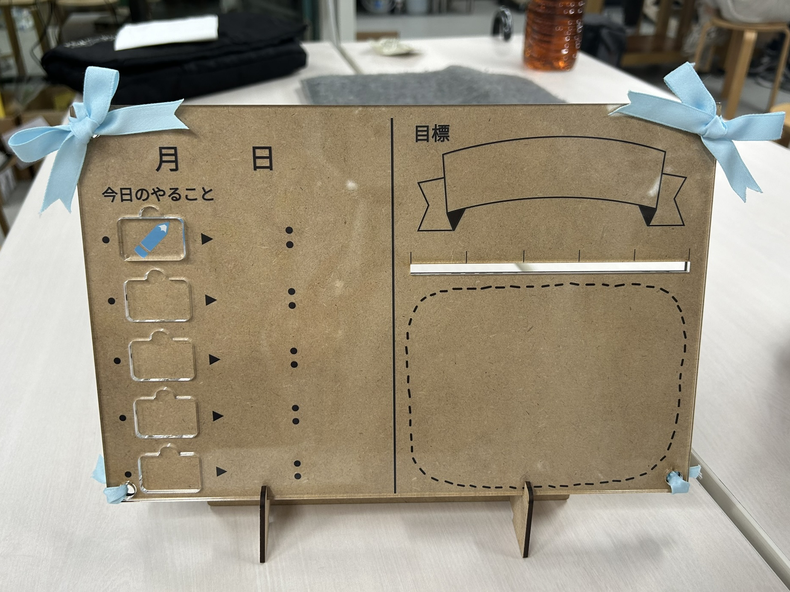

アイデア変更
・ブロックが多くかさばる、自由度を高めたいなどの理由から、書き込めるスペースを増やすことに
・右側は、タスクバーに加えて自由記述欄を追加（書き込むスペースは透明なホワイトボードシートを使用）
・すべてMDFで作っていたところを、ブロック部分だけアクリルに変更
・アクリルで作ったブロックにアイコンをUVプリント




土台はMDFを組み合わせて作りました。
（withalで作られていた土台を参考にさせていただきました。）


表面だけアクリルバージョンも制作しました。

動画
第4回へ